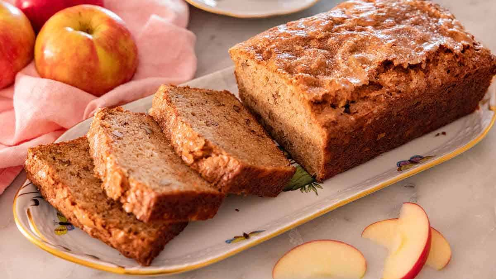
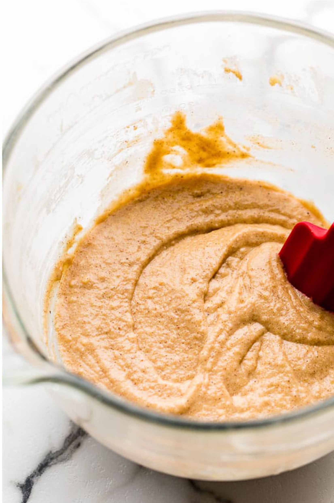
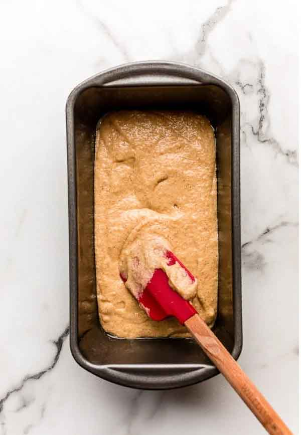
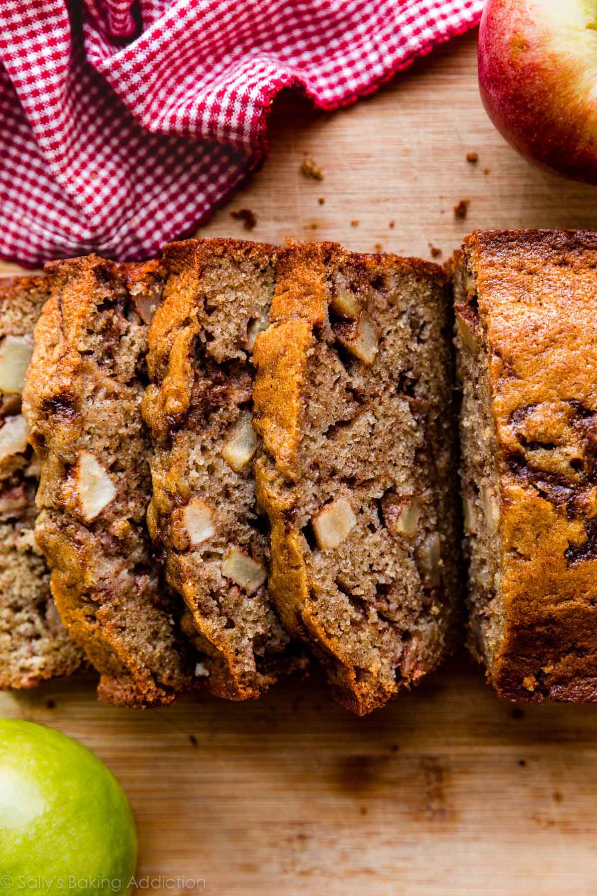

Published October, 23, 2024

This towering loaf is packed with applesauce and chopped apples, plus lots of cinnamon and nutmeg. Enjoy a slice with a cup of tea in the afternoon or turn it into dessert with a scoop of ice cream or whipped cream. Use tart, firm baking apples (such as Mutsu, Cortland, Braeburn, Northern Spy and Stayman Winesap) in this cake for best results. The bread is best enjoyed the day it is baked, but will stay soft and delicious for a few days when stored in an airtight container or bag at room temperature.
Servings: 1 loaf
Prep Time: 10 minutes
Cook Time: 80 minutes, plus cooling
Step 1
Heat oven to 350 degrees. Oil (or spray) a 9-by-5-inch loaf pan and line it with a piece of parchment paper that hangs over the two long sides.
Step 2
In a large bowl, whisk together the oil, sugar, eggs, applesauce, cinnamon, nutmeg and salt.
Step 3
Whisk in the baking powder and baking soda, then, using a flexible spatula, stir in the flour. When only a few streaks of flour remain, fold in the apples.
Step 4
Pour the batter into the prepared pan and smooth the top. Tap the pan on the counter a few times to release any air bubbles. Bake until puffed, golden and a skewer inserted into the center comes out clean, 60 to 70 minutes. If the top of the bread is becoming too dark before it's fully baked, lightly tent it with foil.
Step 5
Let the cake cool in the pan set on a rack for 15 minutes, then carefully remove it from the pan using the parchment paper sling. Set the loaf on the rack to cool completely before slicing. The bread is best enjoyed the day it is baked, but will stay soft and delicious for a few days when stored in an airtight container or bag at room temperature.


